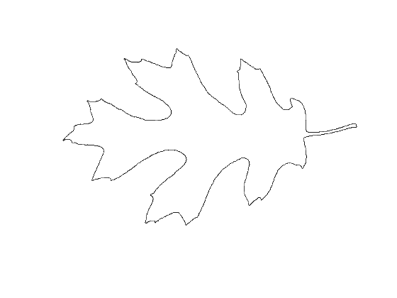
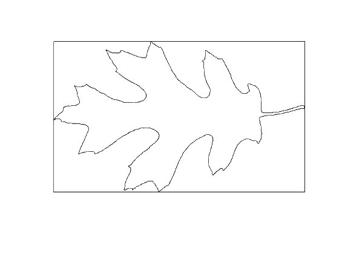
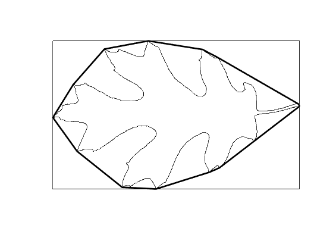
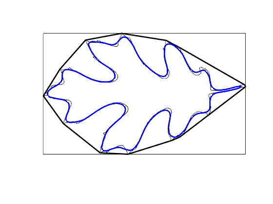
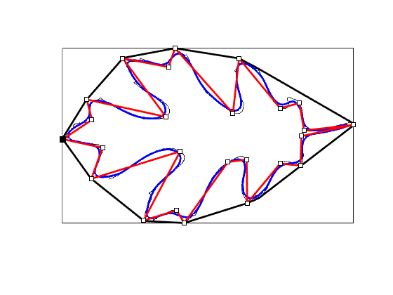
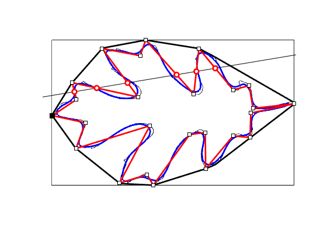

Contents
% Various operations on polygons using a leaf sample. % % output = polygons_demo_leaf(input) % % Example % polygons_demo_leaf % % See also % % ------ % Author: David Legland % e-mail: david.legland@inrae.fr % INRAE - BIA Research Unit - BIBS Platform (Nantes) % Created: 2023-03-24, using Matlab 9.13.0.2049777 (R2022b) % Copyright 2023 INRAE.
Load and display data
% read polygon data as a numeric N-by-2 array poly = load('leaf_poly.txt'); % creates the figure for display figure; axis equal; hold on; axis([0 600 0 400]); axis off; set(gcf, 'color', 'w'); % draw the polygon using basic color option drawPolygon(poly, 'k');
Polygon bounds
% Computes the bounds of the polygon. Result is a 1-by-4 row array, that % can be drawn like using the "drawBox" function poly_bnd = boundingBox(poly); % draw result on original polygon drawBox(poly_bnd, 'k');
Convex hull
% computes convex hull of polygon vertices poly_hull = convexHull(poly); % draw result on original polygon drawPolygon(poly_hull, 'LineWidth', 2, 'Color', 'k');
Smooth polygon
% the smooth method computes average coordinates of each vertex using local % averaging. Argument corresponds to the size of the smoothing window. poly_smooth = smoothPolygon(poly, 51); % draw result on original polygon drawPolygon(poly_smooth, 'color', 'b', 'linewidth', 2);
Simplify polygon
% Computes a simplified version of the polygon, by using the % Douglas-Peucker algorithm. The input argument is the maximum distance % between original polygon and its simplification poly_simpl = simplifyPolygon(poly, 20); % draw result on original polygon drawPolygon(poly_simpl, 'color', 'r', 'linewidth', 2); % we can also display vertices of the (simplified) polygon drawVertices(poly_simpl, 'Color', 'k', 'Marker', 's', 'MarkerFaceColor', 'w');
line-polygon intersections
% compute intersections with an arbitrary line line = createLine([0 250], [600 350]); inters = intersectLinePolygon(line, poly_simpl); % display result drawLine(line, 'k'); drawPoint(inters, 'Color', 'r', 'Marker', 'o', 'MarkerFaceColor', 'w', 'linewidth', 2);